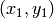
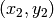

Programas ejecutables¶
Reutilizando el código¶
Con Python, además de usarse de manera interactiva con una consola, es posible crear programas o scripts (guiones) ejecutables. Un script es un fichero de texto con los comandos de Python escritos de manera consecutiva y que se ejecutarán al ajecutar el script. Basta utilizar un editor de textos cualquiera (kate, gedit, notepad, etc.) con extensión .py para que éste lo identifique como un programa de Python.
El siguiente ejemplo es un pequeño programa que llamaremos cubo.py que calcula el cubo de un número cualquiera dado por el usuario:
#!/usr/bin/python
#-*- coding: utf-8 -*-
# Mensaje de bienvenida
print("Programa de calculo del cubo de un numero.\n")
# Numero de entrada
x = 23.0
# Calculo el valor del cubo de x
y = x**3
# Imprimo el resultado
print("El cubo de %.2f es %.2f" % (x, y))
El programa se puede ejecutar ahora desde una consola de Linux (o de la de Windows) escribiendo en ella
python cubo.py
En la primera línea del programa hemos puesto ademas #!/usr/bin/python para que además no haga falta llamar al intérprete y se pueda ejecutar como un programa normal, aunque para ello debe tener naturalmente permisos de ejecución. La segunda línea, #-*- coding: utf-8 -*- hemos indicado el tipo de codificación UTF-8, para poder poner caracteres especiales como tildes y eñes.
Hay que fijarse que a menudo hay lineas comentadas, que empiezan con #. Estas líneas no son ejecutables y son ignoradas por el intérprete de Python y se usan para añadir notas o comentarios. Es muy recomendable incluir comentarios de este tipo que expliquen lo que el programa va haciendo porque nos ayudarán más adelante a recordar qué hace o cómo funciona el código cuando volvamos a leerlo nosotros u otros usuarios del código. Se pueden incluir comentarios de varias líneas, por ejemplo al inicio del programa para explicar lo que hace, usando comillas triples; todo lo que vaya entre ellas será un comentario y por tanto ignorado por el intérprete.:
# Este es un comentario de una linea
print("La raíz cuadrada de 2 es ", sqrt(2.))
"""Este un comentario que
usa varias lineas y está limitado
por comillas triples. Todo lo que esté
entre ellas no se intenta ejecutar
"""
print("El cubo de 2 es ", 2.0**3)
Definiendo funciones¶
Además de las funciones incluídas en Python, el usuario puede crear las suyas propias, que permiten reutilizar código. Veamos por ejemplo una sencilla función para calcular el cubo de un número y otra para imprimir un mensaje:
def cubo(x):
y = x**3
return y
print( cubo(4.0) )
def saludo(nombre):
print("Hola %s, cómo estas?" % nombre)
saludo('Juan')
Hola Juan, cómo estas?
Nótese que el primer caso hemos usado la sentencia return para devolver un valor, sin imprimirlo necesariamente. Esto es lo más habitual cuando se crea un función, hacer todas las operaciones necestarias y luego utilizar return para devolver un valor; luego, utilizarse la función, este retultado puede entonces imprimirse, volcarse a una variable, o lo que el programador necesite. En el segundo caso de arriba siempre se imprime una línea cada vez que se llama a la función, porque se pide en la función.
Advertencia
En Python la identación es obligatoria, porque se emplea para separar los bloques e indican donde empiezan y terminan los bucles y condicionales. Si la identación no es correcta, se obtendrá un resultado equivocado o tendremos un error de identación.
Entrada de datos¶
Generalmente el valor de una variable se asigna haciendo por ejemplo pi=3.1416, pero se puede pedir una entrada por teclado usando la función raw_input() de la forma siguiente:
entrada_numero = raw_input('Dame un numero: ' )
Dame un numero: 22
Es muy importante notar que el valor que se obtiene es siempre un string, aunque se introduzca un número. Por ejemplo, en el ejemplo anterior el valor de la variable “entrada_numero” es “22”, comillas, osea un string, como podría comprobarse haciendo type(entrada_numero). Si queremos operar aritméticamente con el resultado debemos pasarlo a entero o a float, según cómo lo vayamos a usar, por ejemplo:
entrada_numero = float(entrada_numero)
Con la ayuda de sta función podemos crear programas que pidan uno o varios números (u otro tipo de dato) al usuario y hacer cálculos complejos con ellos sin tener que incluir los valores de entrada en el fichero cada vez que se utilice. Ahora podríamos modificar el pequeño programa del inicio, que calcula el cubo de un número, de manera que lo pida al usuario cuando se ejecute el programa:
#!/usr/bin/python
#-*- coding: utf-8 -*-
# Mensaje de bienvenida
print("Programa de calculo del cubo de un numero.\n")
# Recoje un numero dado por el usuario y pasa a float
x = float(raw_input("Valor del numero? "))
# Defino una funcion que calcula el cubo de un numero
def cubo(x):
return x**3
# Imprimo el resultado
print("El cubo de %.2f es %.2f" % (x, cubo(x))
Ejercicios¶
Dada la frase “Dios no solo juega a los dados, a veces los tira donde no se pueden ver”
- ¿Cuantas letras tiene? ¿y palabras?
- Pasa a una variable las 15 primeras letras. Pasa a una lista las cinco primeras palabras.
- ¿Cuántas letras tiene la última palabra?
- Concatena (une) el primer tercio de la fase con el último tercio.
Escribe una función que calcule la distancia cartesiana entre dos puntos cualesquiera de coordenadas  y .
Escriba un programa que calcule la densidad media de cualquier planeta, admitiendo como entrada la masa y el radio medio de éste.
La variación de temperatura de un cuerpo a temperatura inicial
 en un ambiente a
en un ambiente a  cambia de la siguiente manera:
cambia de la siguiente manera:
con
 en horas y siendo k un parámetro que depende del cuerpo. Una lata de refresco a 5ºC queda en la guantera del coche a 40ºC. ¿Qué temperatura tendrá 1, 5, 12 y 14 horas? Utiliza k=0.45. Encuentra las horas que tendría que estar para estar a 0.5ºC menos que la temperatura ambiente. Define funciones adecuadas para realizar ambos cálculos para cualquier tiempo y cualquier hora respectivamente.
en horas y siendo k un parámetro que depende del cuerpo. Una lata de refresco a 5ºC queda en la guantera del coche a 40ºC. ¿Qué temperatura tendrá 1, 5, 12 y 14 horas? Utiliza k=0.45. Encuentra las horas que tendría que estar para estar a 0.5ºC menos que la temperatura ambiente. Define funciones adecuadas para realizar ambos cálculos para cualquier tiempo y cualquier hora respectivamente.